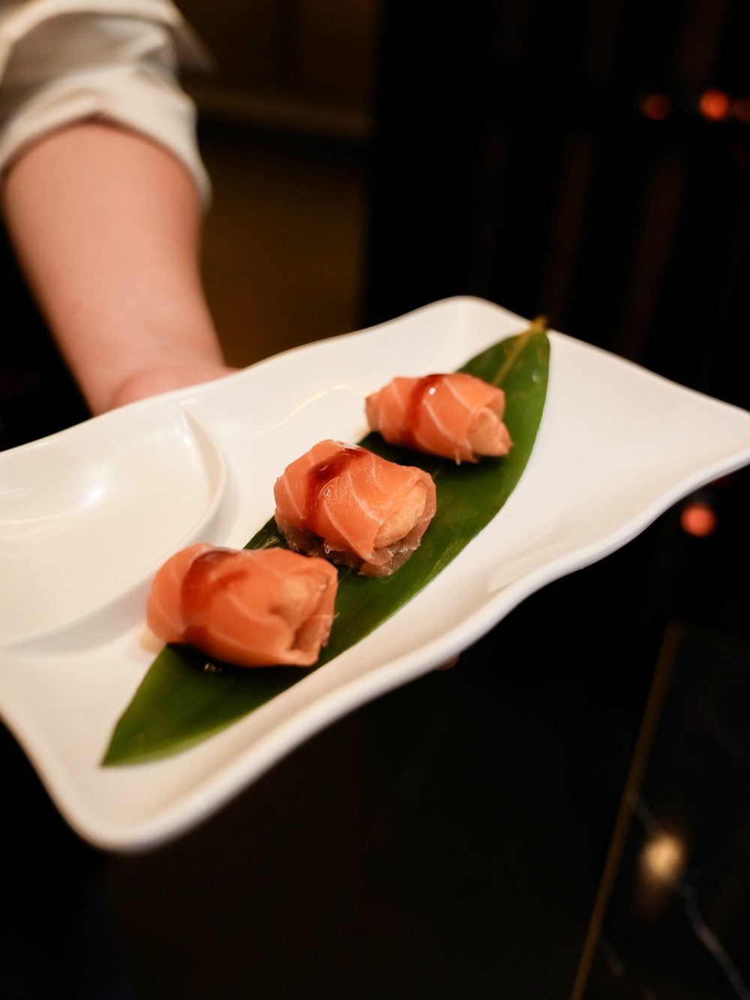
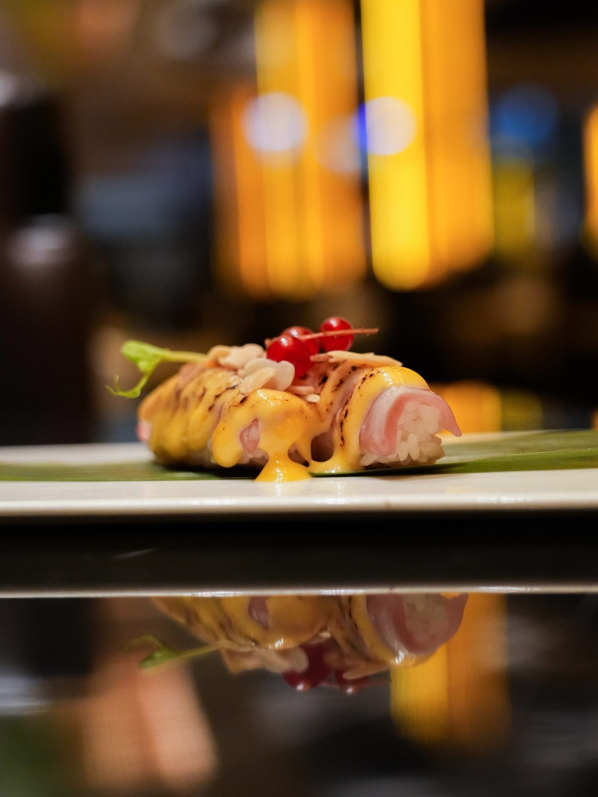
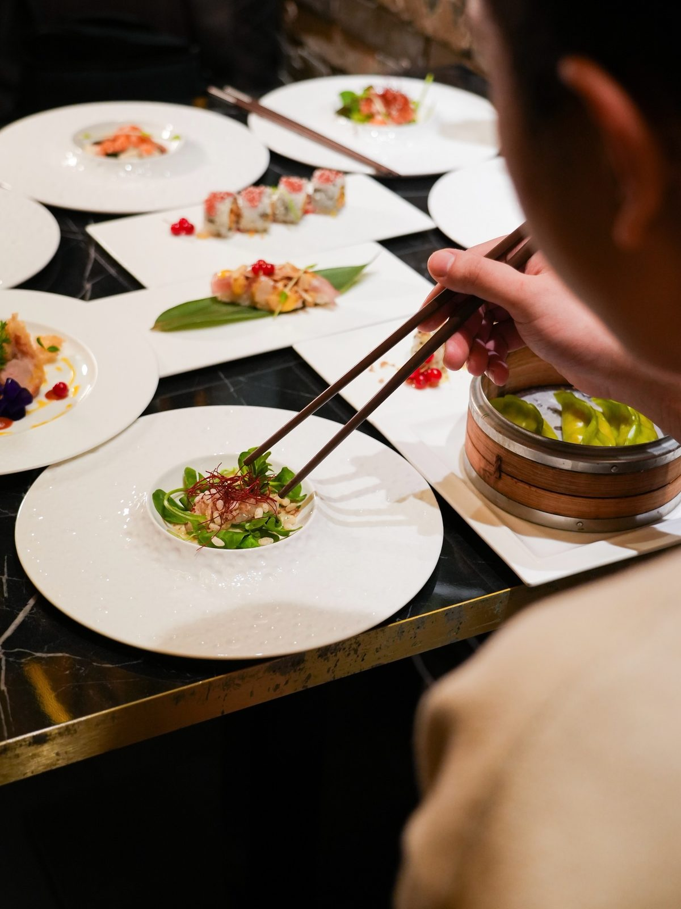
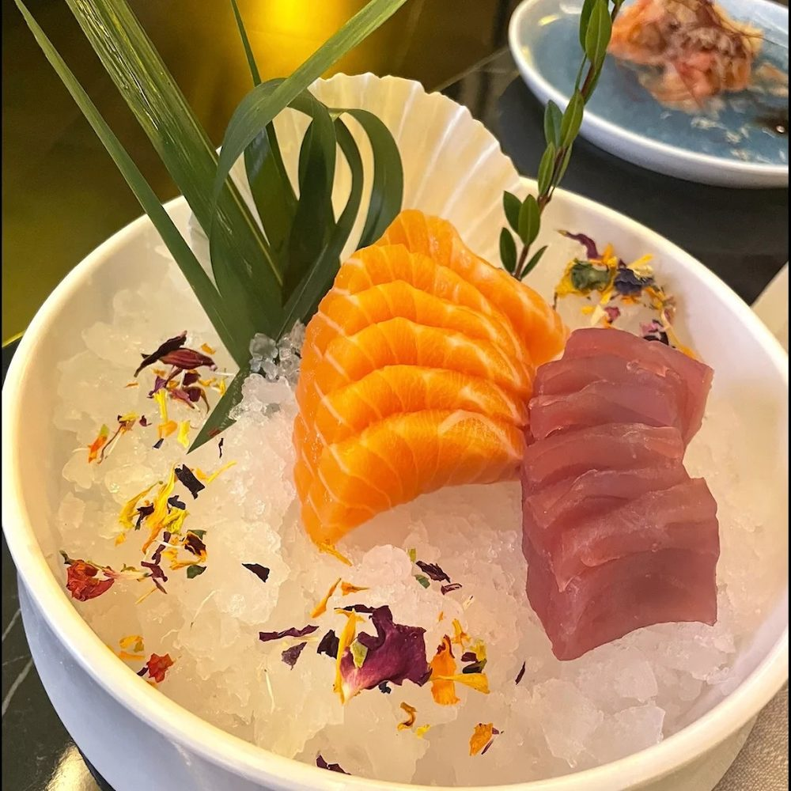
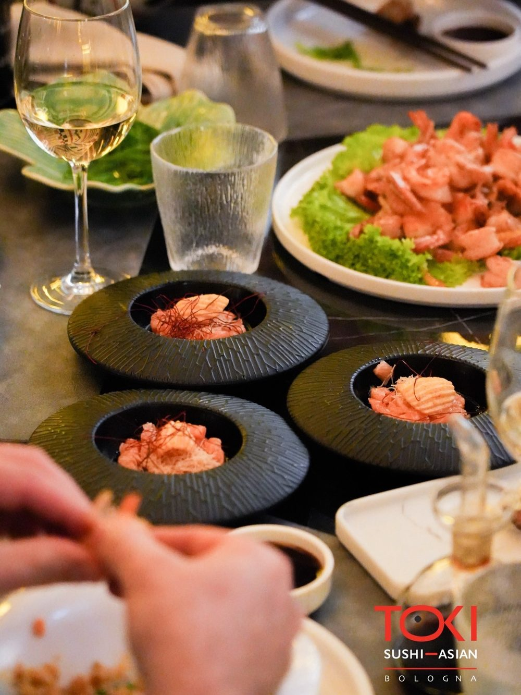
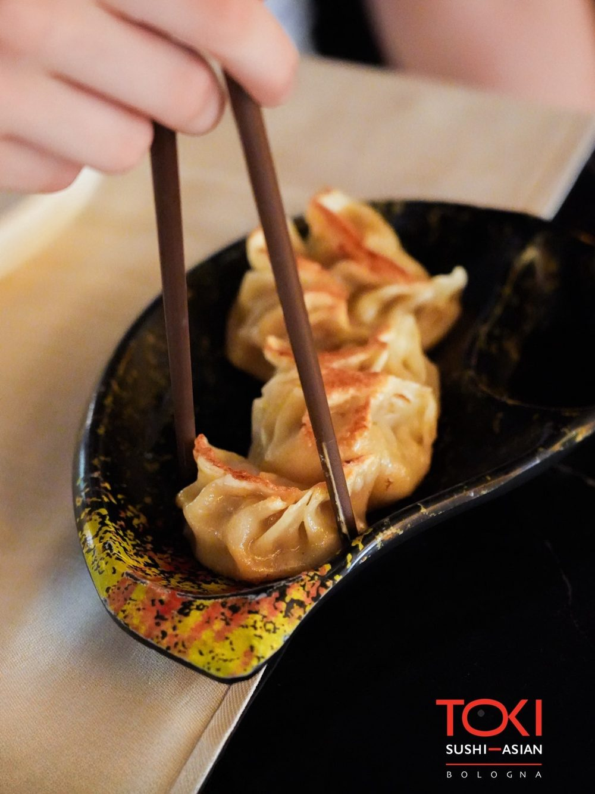
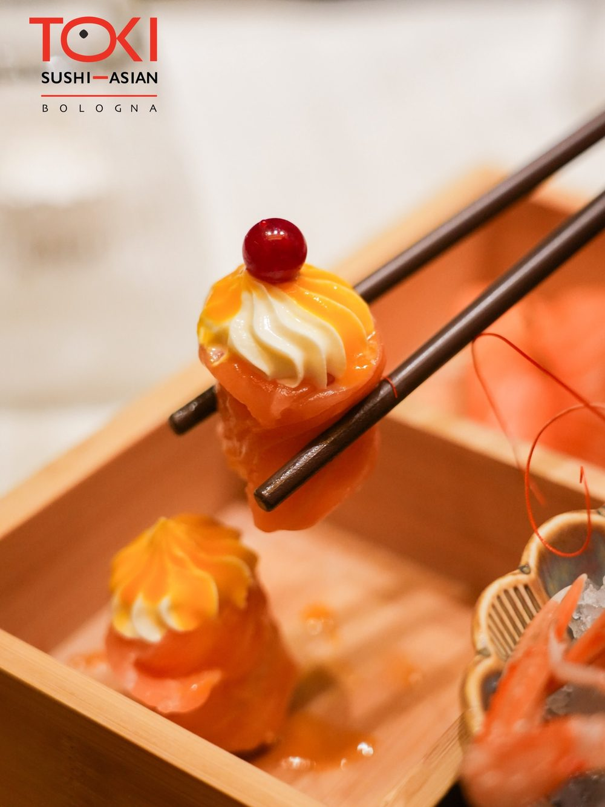
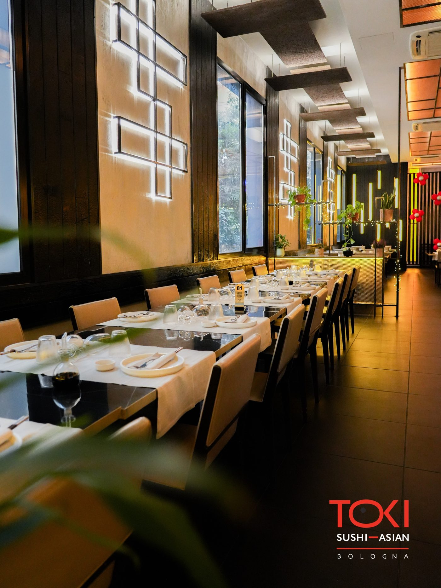
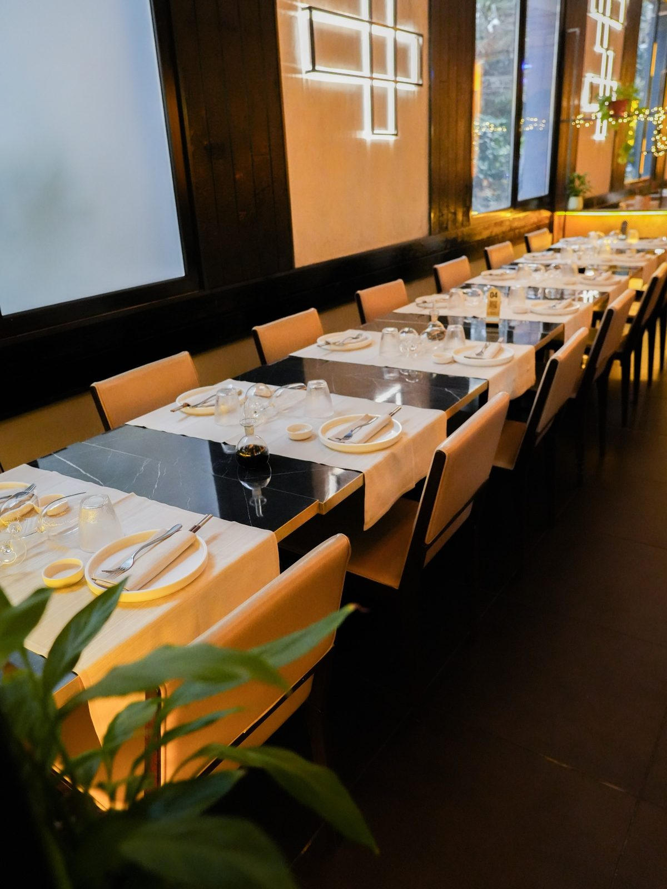
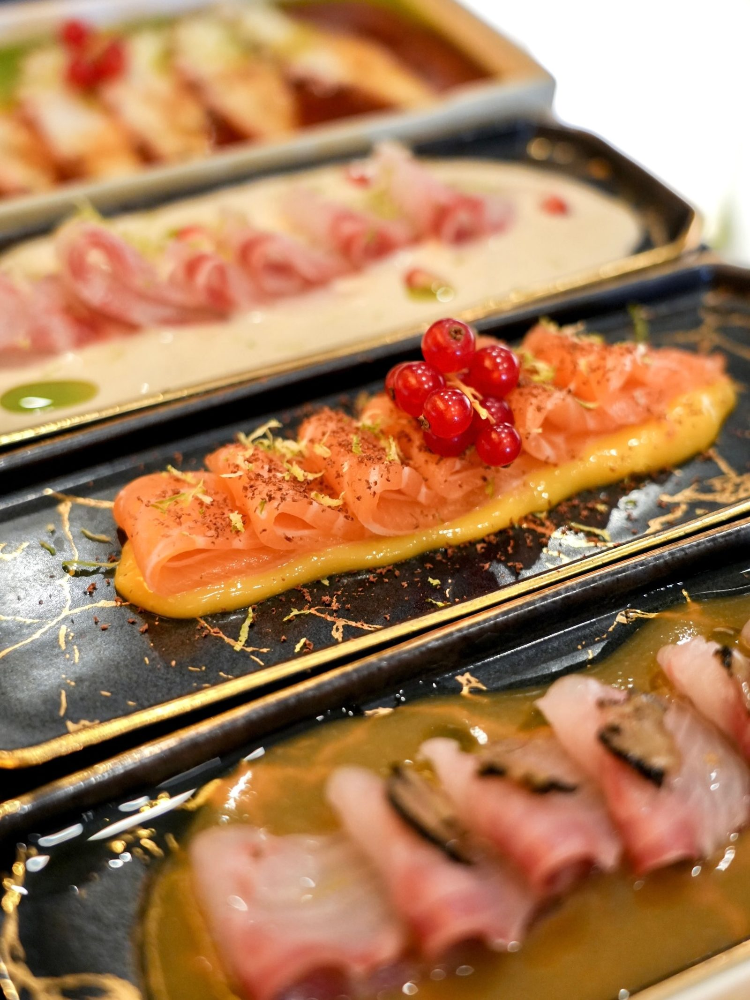

Nigiri
Nigiri Selezione
Riso soffiato e pesce fresco, con salse firmate della casa.

Cucina espressa, pesce selezionato ogni giorno e una formula All You Can Eat trasparente. Nel cuore di Bologna, un'esperienza giapponese contemporanea.

Da Toki portiamo a Bologna una cucina giapponese contemporanea, dove la freschezza del pesce incontra la tecnica e l'eleganza dell'impiattamento.
Ogni piatto nasce a vista, con ingredienti scelti quotidianamente e una brigata che lavora il pesce con precisione. La nostra formula All You Can Eat è pensata per lasciarti scoprire senza compromessi: qualità prima di tutto, sempre in modo trasparente.
Materie prime scelte ogni giorno e lavorate con attenzione, per garantire freschezza e gusto in ogni boccone.
Nulla è pronto in anticipo: ordini e piatti prendono forma al momento, direttamente dalla cucina e dal banco sushi.
Un'esperienza All You Can Eat chiara e senza sorprese, con condizioni semplici e comunicate in modo onesto.
Scegli il tuo momento — pranzo o cena — e ordina liberamente dal menu AYCE. Cucina espressa, portata dopo portata, senza fretta.
La pausa pranzo diventa un viaggio: sushi, piatti caldi e specialità del giorno, serviti con la stessa cura della sera.
Il menu completo, dai nigiri alle specialità scottate fino ai dessert. L'esperienza Toki nella sua forma più ampia.
Prezzi indicativi, facilmente aggiornabili. Bevande, dolci e coperto possono essere soggetti a supplemento; alcune specialità possono prevedere un piccolo extra. Menù bambini disponibile. Le condizioni complete sono indicate nella pagina Menu AYCE.
Un assaggio delle nostre categorie. Filtra per scoprire cosa ti aspetta.

Riso soffiato e pesce fresco, con salse firmate della casa.

Tagli di salmone e tonno serviti su ghiaccio, essenziali e puri.

Rotoli avvolti e rifiniti con topping croccanti e riduzioni dolci.

Pesce battuto al coltello, agrumi e olio profumato in ciotola nera.

Ravioli scottati, zuppe e saltati: la parte calda del nostro menu.

Chiusure delicate tra frutta, mochi e creme leggere.
Ambienti curati, luce calda e un servizio attento: Toki è pensato tanto per una cena romantica quanto per una tavolata tra amici. Un design contemporaneo con dettagli giapponesi, dove ogni serata trova il suo spazio.



★★★★★"Sushi preparato al momento e sempre fresco. Ambiente elegante e servizio gentile."
— Recensione (placeholder)
★★★★★"La formula All You Can Eat migliore provata a Bologna. Piatti caldi ottimi."
— Recensione (placeholder)
★★★★★"Locale curato in ogni dettaglio, perfetto sia per una cena a due che in gruppo."
— Recensione (placeholder)
* Testi dimostrativi, da sostituire con recensioni reali.

Prenota il tuo tavolo con una telefonata, oppure ordina a domicilio dai tuoi servizi preferiti. Ti aspettiamo a Bologna.
| Lun — Ven | 12:00–15:00 · 19:00–00:00 |
| Sabato | 12:00–15:00 · 19:00–00:00 |
| Domenica | 12:00–15:00 · 19:00–00:00 |